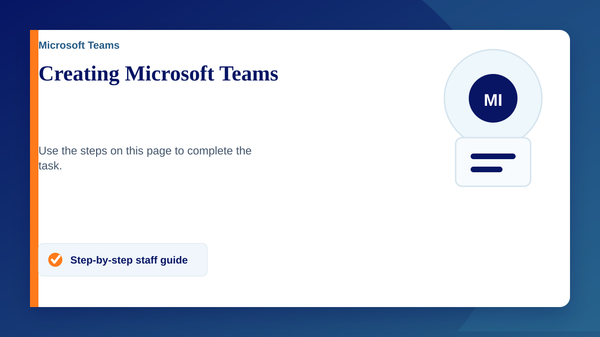

Creating Microsoft Teams
- Sign in to the Microsoft Teams application with your school email address
- Open Office 365 (if you are using the Teams application skip this) and click on Teams on the left side bar
- Click on 'Teams' on the left bar again if you are not automatically put on the Teams page
- Click 'Create Team' (if you already have a team the create button will be in the top right)
- Select a Team type
- Add a name and description to your team, then click next
- Add/invite people to your team. e.g. Class teams will have a students & teachers option
- Click next/skip